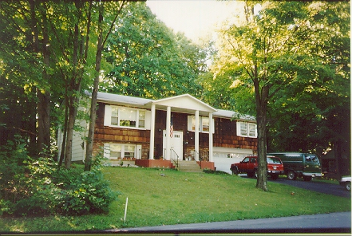

私の家・初夏 (96.5)
風景

|
まだ学校のスキャナーが使えません(;o;)。ものには順序があるのですが(^^;、今回も載せようと思っていたものはあきらめました。 以前は私の家・冬の写真を載せましたが、今回は春の写真です。５月になり、雪もすっかりとけて木々も緑でいっぱいになりました。この季節、今はまだ肌寒く、私も今日（５月）はコートを着て出かけたくらいですが、もう2週間もすると夏らしくなります。そして梅雨に入る日本とは違って６月から７月にかけてが一番暑くなり、８月の朝夕はもう肌寒くなってきます。でも一番気持ちのいい時期でもあります。 私が「こんなにいい季節に暑い日本に帰るなんて、私ってばかだなぁ。。」と言うと、オーナーのダグは「（お母さんがいるので）自分たちも毎年夏にはフロリダに行く。何も暑い時に行くことないのに、って言われるよ」と笑っていました。 |

=私の家(96.5)=
[ホームへ] [写真一覧へ]